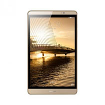
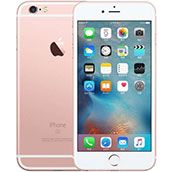
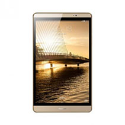
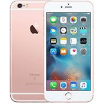

北京市， 市辖区，东城区
北京市， 市辖区，东城区
你好，请登录
免费注册
- 我的订单
- 我的浏览
- 我的收藏
- 客户服务
- 网站导航

游戏社区
游戏社区
游戏社区
游戏社区
北京市， 市辖区，东城区

 搜索
搜索
 我的购物车
0
我的购物车
0
 



三星 Galaxy A9高配版 (A910) 精灵黑 全网通4G手机 双卡双待
4G手机 双卡双待 香槟金 全网通(4G RAM+64G ROM)
市场价： ¥3599.00
Apple iPhone 6s 16GB 玫瑰金色 移动联通电信4G手机 ¥4858.00
Apple iPhone 6s 16GB 玫瑰金色 移动联通电信4G手机 ¥4858.00
Apple iPhone 6s 16GB 玫瑰金色 移动联通电信4G手机 ¥4858.00
Apple iPhone 6s 16GB 玫瑰金色 移动联通电信4G手机 ¥4858.00
Apple iPhone 6s 16GB 玫瑰金色 移动联通电信4G手机 ¥4858.00
商品名称：三星 Galaxy A9高配版 (A9100)精灵黑 全网通4G手机 双卡双待
商品名称：三星 Galaxy A9高配版 (A9100)精灵黑 全网通4G手机 双卡双待
 7天无理由退货
7天无理由退货 15天免费换货
15天免费换货 正品行货 品质保证
正品行货 品质保证 专业售后服务
专业售后服务